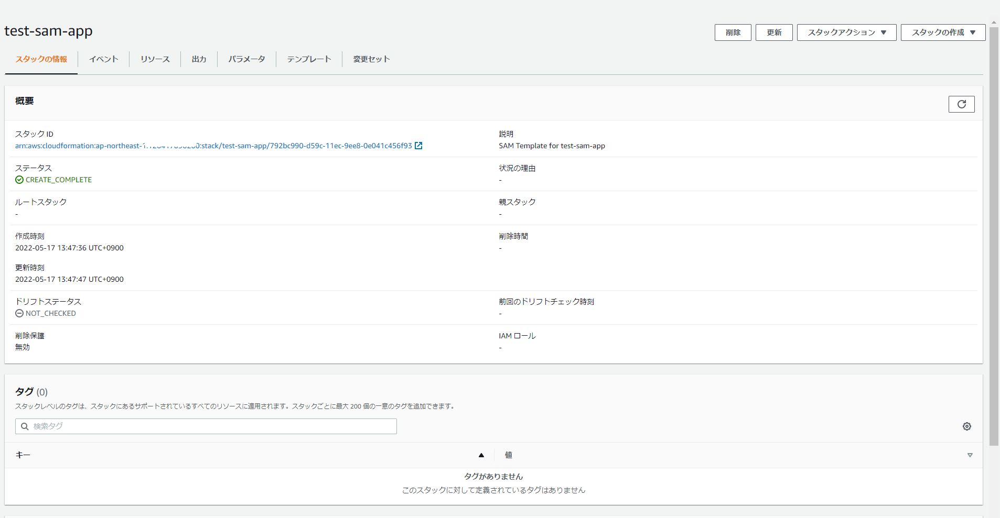
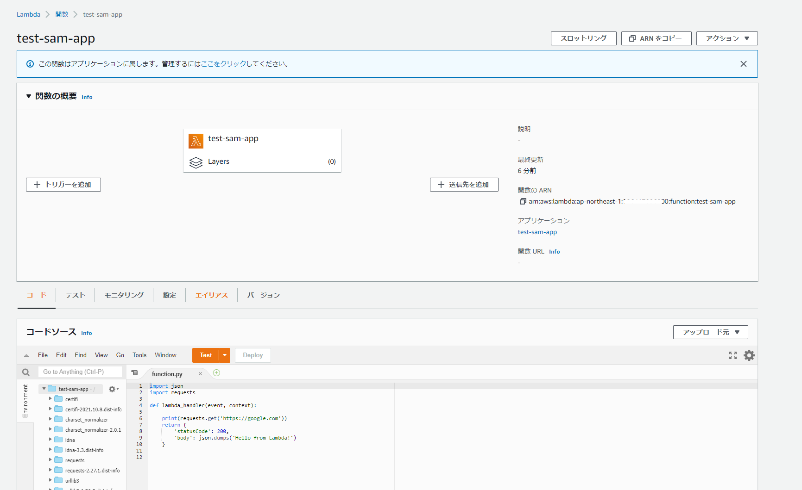

AWS SAM CLI を使用したLambdaのデプロイ
SAM CLIのインストール
コマンド
wget https://github.com/aws/aws-sam-cli/releases/latest/download/aws-sam-cli-linux-x86_64.zip
unzip aws-sam-cli-linux-x86_64.zip -d sam-installation
sudo ./sam-installation/install
sam --version
事前準備
Python3.8系がインストールされていないとエラーになったのでインストール
[ec2-user@bastin test-sam]$ sam build Building codeuri: /home/ec2-user/test-sam/function runtime: python3.8 metadata: {} architecture: x86_64 functions: [‘Function’]
Build Failed Error: PythonPipBuilder:Validation - Binary validation failed for python, searched for python in following locations : [’/usr/bin/python’] which did not satisfy constraints for runtime: python3.8. Do you have python for runtime: python3.8 on your PATH?
sudo amazon-linux-extras install python3.8
ディレクトリ/デプロイ用のファイル準備
[ec2-user@bastin test-sam]$ tree
.
├── function
│ ├── function.py
│ └── requirements.txt
├── samconfig.toml
└── template.yaml
1 directory, 4 files
[ec2-user@bastin test-sam]$ cat function/function.py
import json
import requests
def lambda_handler(event, context):
print(requests.get('https://google.com'))
return {
'statusCode': 200,
'body': json.dumps('Hello from Lambda!')
}
[ec2-user@bastin test-sam]$
[ec2-user@bastin test-sam]$ cat function/requirements.txt
requests
[ec2-user@bastin test-sam]$
[ec2-user@bastin test-sam]$ cat samconfig.toml
version = 0.1
[default]
[default.deploy]
[default.deploy.parameters]
stack_name = "test-sam-app"
s3_bucket = "zatoima"
s3_prefix = "test-sam-app"
region = "ap-northeast-1"
capabilities = "CAPABILITY_IAM"
[ec2-user@bastin test-sam]$
[ec2-user@bastin test-sam]$ cat template.yaml
AWSTemplateFormatVersion: '2010-09-09'
Transform: AWS::Serverless-2016-10-31
Description: SAM Template for test-sam-app
Globals:
Function:
Timeout: 3
Resources:
Function:
Type: AWS::Serverless::Function
Properties:
FunctionName: test-sam-app
CodeUri: function/
Handler: function.lambda_handler
Runtime: python3.8
Outputs:
Function:
Description: "test-sam-app Lambda Function ARN"
Value: !GetAtt Function.Arn
FunctionIamRole:
Description: "Implicit IAM Role created for test-sam-app function"
Value: !GetAtt FunctionRole.Arn
ビルド、デプロイ
[ec2-user@bastin test-sam]$ sam build
Building codeuri: /home/ec2-user/test-sam/function runtime: python3.8 metadata: {} architecture: x86_64 functions: ['Function']
Running PythonPipBuilder:ResolveDependencies
Running PythonPipBuilder:CopySource
Build Succeeded
Built Artifacts : .aws-sam/build
Built Template : .aws-sam/build/template.yaml
Commands you can use next
=========================
[*] Validate SAM template: sam validate
[*] Invoke Function: sam local invoke
[*] Test Function in the Cloud: sam sync --stack-name {stack-name} --watch
[*] Deploy: sam deploy --guided
[ec2-user@bastin test-sam]$
[ec2-user@bastin test-sam]$
[ec2-user@bastin test-sam]$ sam deploy
Uploading to test-sam-app/70531b5489f5a99ab4c62e4acc57d0ef 452386 / 452386 (100.00%)
Deploying with following values
===============================
Stack name : test-sam-app
Region : ap-northeast-1
Confirm changeset : False
Disable rollback : False
Deployment s3 bucket : zatoima
Capabilities : ["CAPABILITY_IAM"]
Parameter overrides : {}
Signing Profiles : {}
Initiating deployment
=====================
Uploading to test-sam-app/ba13ca287976cbfe7f0c7cda0b66556e.template 725 / 725 (100.00%)
Waiting for changeset to be created..
～省略～
Successfully created/updated stack - test-sam-app in ap-northeast-1
CloudFormation

Lambda

関連しているかもしれない記事
- Lambdaからawslambda-psycopg2を使用してAurora PostgreSQLに接続
- pgAdmin4からAurora PostgreSQLへ踏み台サーバのポートフォワード経由で接続する
- DynamoDBからkinesis firehose経由でS3に出力時にJSON形式からCSV形式に変換するLamdba用のPythonスクリプト
- DynamoDBからkinesis firehose経由でS3に出力
- Auroraの各バージョンのサポート期間